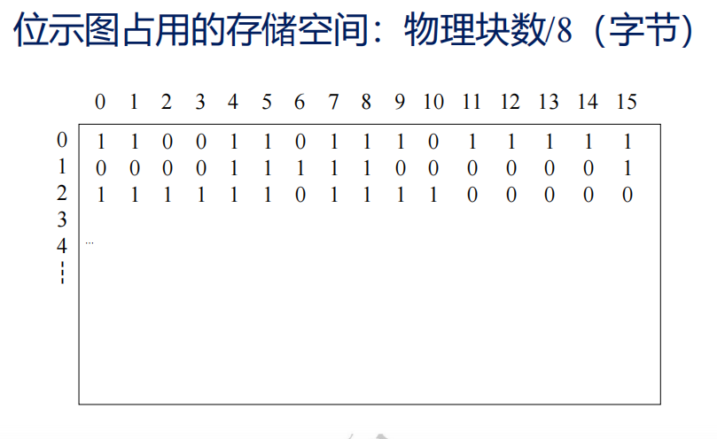
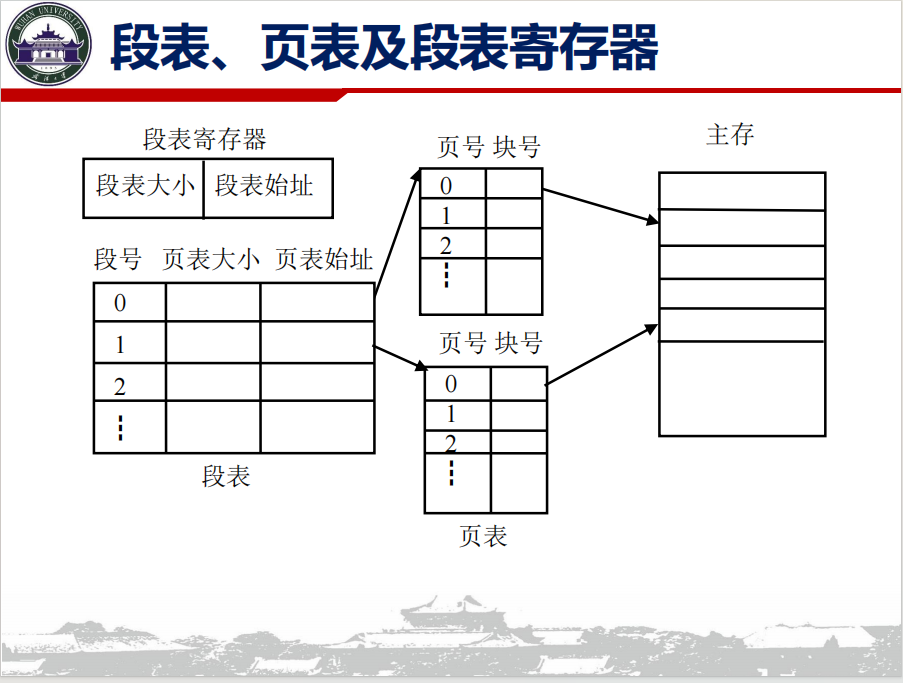
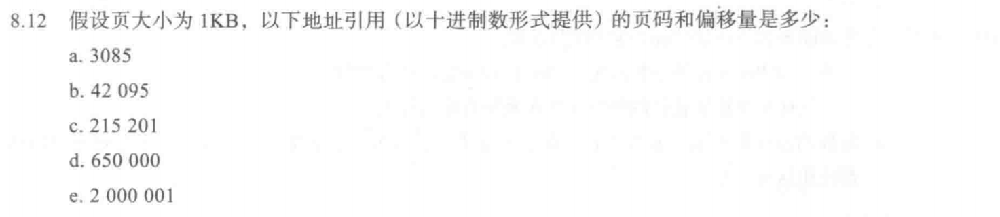
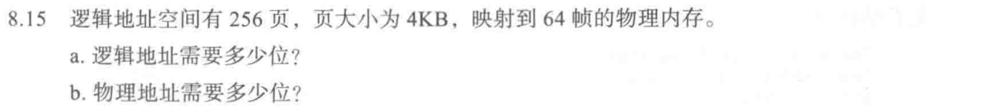
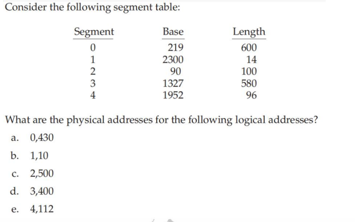

存储器管理¶
概念梳理¶
地址¶
地址分类
- 物理地址
- 基址
- 逻辑地址
地址变换
- 绝对装入
- 静态链接
- 动态重载
分区¶
一块一块的内存地址 存在琐碎的空间碎片 给进程分配内存的时候 还需要关注空间的 Fittness 造就如下分配算法
- 首次适应
- 循环首次适应
- 最佳适应
- 最坏适应
大多数时间下 无法有效利用完全分区的内存
动态分区管理与碎片利用¶
动态拼接各个分区的空余内存 ~ 动态重定位
使用 伙伴系统 来帮助 简洁的分配 快速的重新拼接碎片
分配¶
连续分配
- 单一连续分配
- 分区管理
- 伙伴系统
非连续分配
- 分段
- 分页
- 段页
分页分配¶
Paging 给内存划分为页框以及不同的页
逻辑地址可以使用页号+页内偏移来划分 同时注意二进制下的逻辑地址结构该怎么写
分段分配¶
段存储更加具备逻辑性 譬如
-
主程序段（Main）
-
子程序段（Subroutines）
-
数据段（Data）
-
堆栈段（Stack）
地址参照 段号 + 段内地址
与分页不太一样 无法直接按照格式截断 拼接二进制 但是对于不同的进程 如果存在相同的运行段 段内地址的分配是可以复用的
段页分配¶
先按照程序的逻辑运行段 划分段
再在段内划分一个一个页 保持格式的规整 再在页内进行偏移地址的确定
不同程序之间的相同逻辑段可以复用 而页内的偏移确定又帮助高效简便地计算实际地址
允许段内末尾留白
位示图

¶快速得到存在空闲的空间
页表与快表¶
计组里应该涉及到过 快表存储在主存外类似Cache 先查TLB 如果miss再去查主存的页表就行
页表本身也存在分类
- 多级页表
- 哈希页表
- 反向页表
| 特性 / 维度 | 多级页表 (Multi-level) | 哈希页表 (Hashed) | 反向页表 (Inverted) |
|---|---|---|---|
| 表格数量 | 每个进程独立拥有一套 | 每个进程独立拥有（或全局） | 整个系统仅此一张 |
| 表项对应关系 | 一项对应一个虚拟页 | 一项对应一个虚拟页 | 一项对应一个物理页帧 |
| 64位系统适用度 | 较差（树太深，访问内存多） | 非常好（最适合大地址空间） | 极好（物理内存越大越划算） |
| 地址翻译速度 | 取决于树的层数（慢） | 取决于链表长度（平均快） | 最慢（需要遍历搜索，必须挂靠哈希加速） |
| 最核心的优势 | 保持物理块 4KB 的极端规整 | 能够快速处理极大的稀疏地址 | 彻底限制了页表对内存空间的消耗 |
页段¶

- 确定段号 判断是否段内越界
-
计算页表始址
-
从页表读出物理块，计算物理地址
习题¶

页大小为1024
a. \(3085/1024 = 3\) 偏移为 $3085 \% 1024 = 13 $
b. \(42095/1024 = 41\) 偏移为 $42095 \% 1024 = 111 $
c. \(215201/1024 = 210\) 偏移为 $215201 \% 1024 = 161 $
d. \(650000/1024 = 634\) 偏移为 $650000 \% 1024 = 784 $
e. \(2000001/1024 = 1953\) 偏移为 $3085 \% 1024 = 129 $

逻辑地址可以拆成页号 + 页内偏移
0~255 共8位 页内偏移 \(2^{12}\)共12 + 8 = 20位逻辑地址
而实际物理只有64帧 那么只需要6位即可记录完备物理帧 一共需要18位物理地址
a.分页内存需要先查页表 再查内存 一共需要两次访存 共100ns
b.TLB访存有效 只需一次TLB 再访存 如果失效 则TLB + 页表 + 主存 $$ t = \alpha (t+m) + (1- \alpha)(t+2m) $$ 带入
\(t = 64.5ns\)

a. 0,430位于段0 实际地址为 219 + 430 = 649
b. 1,10位于段1 实际地址为 2310
c. 2,500位于段2 偏移大于段长度 发生段错误
d. 3,400位于段3 实际地址为1727
e. 4,112位于段4 发生段错误